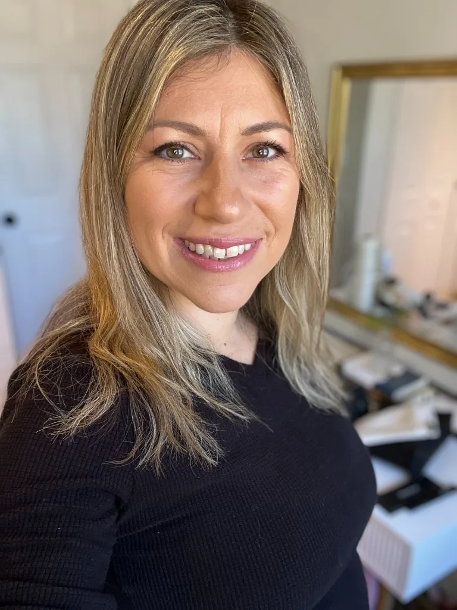
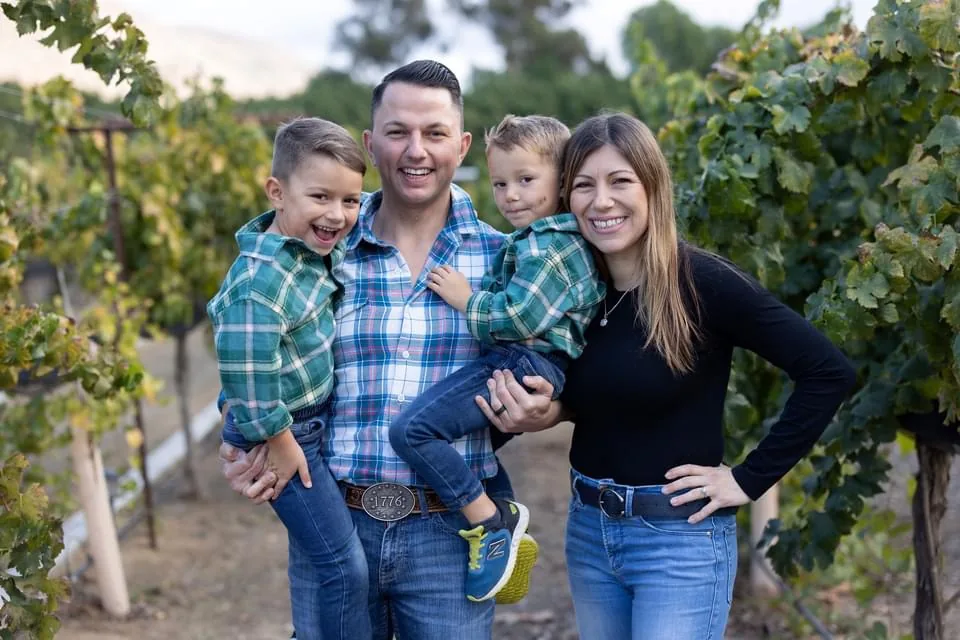
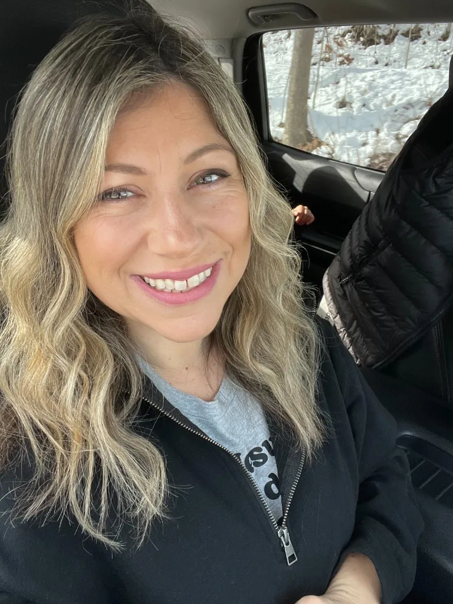

I'm Dr. Tania Williams — a chiropractor and functional wellness doctor helping women and families feel their best from the inside out.

The Short Version
I'm Dr. Tania Williams — a chiropractor and functional wellness doctor passionate about helping women and families feel their best from the inside out.
My journey into natural health began after my dad was diagnosed with pancreatic cancer when I was 26. That experience changed the way I looked at health and ultimately led me to chiropractic. Over the years, as I learned more about the impact of nutrition, stress, environmental toxins, and the products we use every day, my passion expanded into functional wellness and clean living.
Find me on Instagram at @drtaniacleanbeauty — I'd love to have you along for this chapter.
Where It Started
When I was 26 years old, my dad was diagnosed with pancreatic cancer. Watching my family navigate that experience changed the way I thought about health and made me start asking bigger questions about what truly contributes to our well-being.
That experience ultimately led me to chiropractic school, where I discovered a passion for the body's ability to heal and function at its best when we support it rather than simply chase symptoms. It's also where I met my husband, Dr. Cordie Williams, who shares my passion for natural health and wellness.
When I became pregnant with our first son, I started looking much more closely at the ingredients in the products we were using every day. Pregnancy and motherhood opened my eyes even further to how much we are exposed to through what we eat, what we put on our bodies, and the products we bring into our homes.
We went on to have two home births, and those experiences deepened my belief in trusting the body, becoming informed, and being intentional about the choices we make for ourselves and our families.


What It Became
Through my work as a chiropractor, my own experiences, motherhood, and continuing education, I began looking beyond the nervous system and musculoskeletal system and into the many other factors that influence how we feel.
Nutrition. Stress. Hormones. Sleep. Environmental toxins. The products we put on our skin and use in our homes.
We live in a world where we're exposed to more stressors and environmental influences than ever before. That's what led me to functional wellness — a whole-person approach that combines my chiropractic background with nutrition, clean living, and a passion for helping women and families make healthier, more intentional choices.
And as a mom, I know firsthand that healthy living doesn't have to mean doing everything perfectly. It doesn't have to be overwhelming, expensive, or complicated. I'm much more interested in finding simple, realistic changes that can fit into real life.
The Journey
My dad's diagnosis didn't just change our family. It changed the questions I was willing to ask about health — and it sent me toward a career of supporting the body instead of only chasing symptoms.
Chiropractic school is where I fell in love with the body's ability to heal when we support it. It's also where I met Cordie. We built a life and a practice around natural health — and then parenthood asked us to look even closer at what we were bringing into our home.
Two home births deepened my belief in trusting the body and becoming informed. The products we put on our skin and use in our homes aren't a side note — they're part of the same whole-person picture as nutrition, stress, hormones, and sleep.
Today I take a whole-person approach: chiropractic, functional wellness, nutrition, and clean living. Not perfection. Not overwhelm. Simple, realistic changes that can fit into real life — one fresh choice at a time.
What we put on our bodies matters, just as much as what we put in them. Ringana's fresh, intentional approach to everyday products is the clean-beauty chapter that belongs with everything else I already teach.
I haven't tried them yet. The ones I'm most excited to try are on my radar — and this community will hear my honest notes as they land.
This next chapter is about bringing wellness, beauty, clean living, nutrition, and education together in a way that feels approachable and empowering. My goal is simple: to help you feel better, make more informed choices, and create a healthier life one fresh choice at a time.
Why Build With Me
You get a chiropractor and functional wellness doctor who has spent her career looking at the whole person — and a mom who knows healthy living has to fit real life. No fear. No perfection. Simple, intentional choices.
When you join this founding community, you get honest education, the products I'm excited to try, and a partner who will only recommend what I'd put in my own home.
The Right Fit
Healthy living doesn't have to mean doing everything perfectly. I'm much more interested in simple, realistic changes that can fit into real life.
I'm not here to pressure anyone. I'm here to share what I've found, answer your questions honestly, and help you decide if this is right for your life — whether that's as a customer, a teammate, or neither.
If you care about ingredient transparency, products that actually perform, and building something meaningful before a market even opens — we should talk. If you're looking for a get-rich-quick scheme, I'm probably not your person, and that's okay.
The best partnerships start with honesty on both sides. That's how I've always operated, and it's not changing now.
Stay Connected
Join the founding list for launch updates and my honest product notes — or reach out on Instagram if you'd rather chat first.